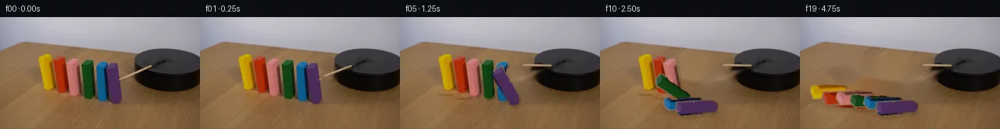

![首帧]()

Round 00
2026-11-04T23:02:54.546479+00:00像素候选变化代码 +236/−0inspection 更新
pixels 8a25455cb2179f81 · code aa7e2795b61b6eec
查看本轮 generate.py 真实 diff
--- previous/generate.py
+++ current/generate.py
@@ -0,0 +1,236 @@
+#!/usr/bin/env python3
+"""Generate a source-textured, fixed-camera domino cascade for PixelWorld-Text."""
+
+from pathlib import Path
+
+import cv2
+import numpy as np
+from PIL import Image, ImageDraw, ImageFont
+
+import artifact_io
+
+
+ROOT = Path(__file__).resolve().parent
+H, W = 144, 256
+
+
+def largest_component(mask: np.ndarray) -> np.ndarray:
+ count, labels, stats, _ = cv2.connectedComponentsWithStats(mask.astype(np.uint8), 8)
+ if count <= 1:
+ raise RuntimeError("empty object segmentation")
+ label = 1 + int(np.argmax(stats[1:, cv2.CC_STAT_AREA]))
+ return labels == label
+
+
+def object_mask(hsv: np.ndarray, spec: dict) -> np.ndarray:
+ """Color-key one block inside its measured, non-overlapping source box."""
+ x0, y0, x1, y1 = spec["box"]
+ h = hsv[..., 0]
+ s = hsv[..., 1]
+ v = hsv[..., 2]
+ if spec["name"] == "yellow":
+ keyed = (h >= 16) & (h <= 38) & (s >= 135) & (v >= 62)
+ elif spec["name"] == "orange":
+ keyed = ((h <= 14) | (h >= 177)) & (s >= 135) & (v >= 58)
+ elif spec["name"] == "rose":
+ keyed = ((h <= 9) | (h >= 170)) & (s >= 45) & (v >= 62)
+ elif spec["name"] == "green":
+ keyed = (h >= 36) & (h <= 90) & (s >= 64) & (v >= 35)
+ elif spec["name"] == "blue":
+ keyed = (h >= 88) & (h <= 122) & (s >= 80) & (v >= 35)
+ elif spec["name"] == "purple":
+ keyed = (h >= 124) & (h <= 171) & (s >= 42) & (v >= 28)
+ else:
+ raise KeyError(spec["name"])
+
+ local = np.zeros((H, W), np.uint8)
+ local[y0:y1, x0:x1] = keyed[y0:y1, x0:x1]
+ local = largest_component(local).astype(np.uint8) * 255
+ # Fill tiny specular holes and include the one-pixel mixed edge already in the source.
+ local = cv2.morphologyEx(local, cv2.MORPH_CLOSE, np.ones((3, 3), np.uint8))
+ local = cv2.dilate(local, np.ones((3, 3), np.uint8), iterations=1)
+ local[:y0, :] = 0
+ local[y1:, :] = 0
+ local[:, :x0] = 0
+ local[:, x1:] = 0
+ return local
+
+
+def inpaint_plate(source: np.ndarray, erase: np.ndarray, radius: float = 4.0) -> np.ndarray:
+ """Reconstruct only pixels hidden by source objects, preserving the rest exactly."""
+ return cv2.inpaint(source, erase.astype(np.uint8), radius, cv2.INPAINT_TELEA)
+
+
+def rotation_matrix(pivot: tuple[float, float], degrees: float) -> np.ndarray:
+ return cv2.getRotationMatrix2D(pivot, degrees, 1.0)
+
+
+def transform_rgba(source: np.ndarray, mask: np.ndarray, matrix: np.ndarray):
+ """Warp premultiplied source color and alpha to avoid bright/dark edge fringes."""
+ alpha = mask.astype(np.float32) / 255.0
+ premul = source.astype(np.float32) * alpha[..., None]
+ wa = cv2.warpAffine(alpha, matrix, (W, H), flags=cv2.INTER_LINEAR,
+ borderMode=cv2.BORDER_CONSTANT, borderValue=0)
+ wp = cv2.warpAffine(premul, matrix, (W, H), flags=cv2.INTER_LINEAR,
+ borderMode=cv2.BORDER_CONSTANT, borderValue=0)
+ return wp, np.clip(wa, 0.0, 1.0)
+
+
+def composite_premul(canvas: np.ndarray, premul: np.ndarray, alpha: np.ndarray) -> np.ndarray:
+ return premul + canvas * (1.0 - alpha[..., None])
+
+
+def block_angle(frame: int, start: int) -> float:
+ # Two-frame stagger makes each collision hand off momentum to the next block.
+ trajectory = {0: 5.0, 1: 22.0, 2: 52.0, 3: 76.0, 4: 88.0, 5: 84.0}
+ elapsed = frame - start
+ if elapsed < 0:
… diff truncated; 149 more lines …